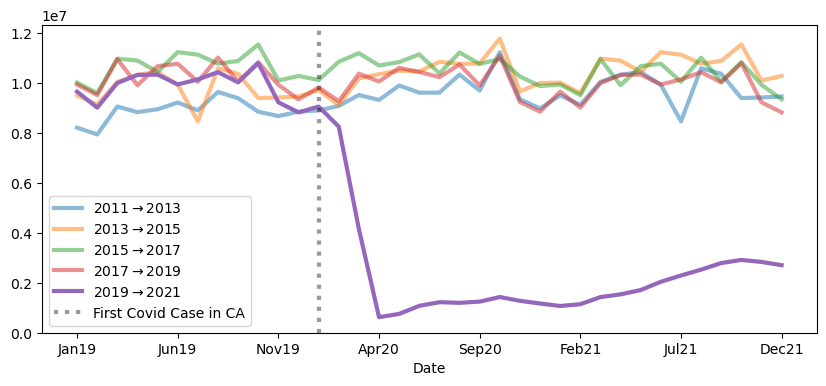
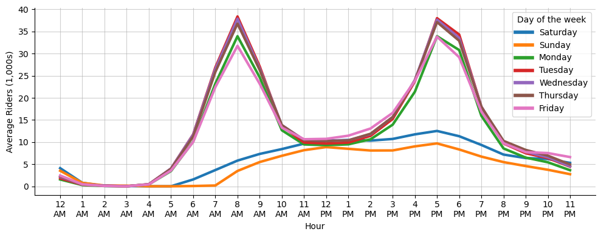

import pandas as pd
import numpy as np
import dask.dataframe as dd
# Timers
from dask.diagnostics import ProgressBar
from tqdm import tqdm
import time
# Data Visualization
import seaborn as sns
import matplotlib.pyplot as plt
# I/O Utilities
import requests
from bs4 import BeautifulSoup
import bs4
import re
import os
import sys
from datetime import datetime
from IPython.display import display, HTML
from typing import CallableThe following example involves a situation where I want to read in historical data on Bay Area Rapid Transit (BART) ridership at the station/hour level. BART kindly makes such ridership information publicly available on their webpage.
Data Retrieval
To start, I’ll set up a scraping script using requests and BeautifulSoup to build access to the BART hourly ridership data.
# URL of the webpage to scrape
url = 'https://afcweb.bart.gov/ridership/origin-destination/'
# Send an HTTP GET request to the webpage
response = requests.get(url)
# Check if the request was successful
if response.status_code == 200:
# Parse the content of the webpage with Beautiful Soup
soup = BeautifulSoup(response.text, 'html.parser')
else:
print("Failed to retrieve the webpage")I can take a quick look at this webpage by rendering it directly into the jupyter notebook via display(HTML(_)) from IPython.display. Note that I’m rendering the full page here because I know it’s very small. If this were a larger, more complex webpage, then I would only render some piece of interest (e.g. a table) in a notebook.
display(HTML(str(soup)))Index of /ridership/origin-destination
My target here is the set of .csv.gz (compressed .csv files) that contain hourly ridership totals between each station pairing. These are all links, thus are in <a> </a> tags, and have an href that ends in .csv.gz. The following captures links to that specification:
links = soup.find_all(
# final all <a></a> content
'a',
# filter to only those links with href ending in .csv.gz
href=lambda x: x and x.endswith(".csv.gz")
)
# example output
links[0]<a href="date-hour-soo-dest-2018.csv.gz"> date-hour-soo-dest-2018.csv.gz</a>I’m specifically interested in the file that this piece of html links to, which is contained in the href tag. I can capture the href for each of these pieces of html as follows
files = [l.get('href') for l in links]
# example output
files[0]'date-hour-soo-dest-2018.csv.gz'I’ve now captured the filename, which is a relative url. To download this, I’ll need to convert this to a full url, by concatenating the base url:
url'https://afcweb.bart.gov/ridership/origin-destination/'to each of the files’ relative urls. This leaves us with direct links that each prompt the download of one year’s worth of hourly trip totals between the station pairings in the system:
file_urls = [url + f for f in files]
file_urls['https://afcweb.bart.gov/ridership/origin-destination/date-hour-soo-dest-2018.csv.gz',
'https://afcweb.bart.gov/ridership/origin-destination/date-hour-soo-dest-2019.csv.gz',
'https://afcweb.bart.gov/ridership/origin-destination/date-hour-soo-dest-2020.csv.gz',
'https://afcweb.bart.gov/ridership/origin-destination/date-hour-soo-dest-2021.csv.gz',
'https://afcweb.bart.gov/ridership/origin-destination/date-hour-soo-dest-2022.csv.gz',
'https://afcweb.bart.gov/ridership/origin-destination/date-hour-soo-dest-2023.csv.gz',
'https://afcweb.bart.gov/ridership/origin-destination/date-hour-soo-dest-2024.csv.gz']This is our target data, so before proceeding to download all of it for local storage, we’ll profile the sizes of each file and the total download:
counter = 1
total = 0
for f in file_urls:
response = requests.head(f)
# Retrieve the file size for each file
file_size = int(response.headers.get('Content-Length', 0))
# Keep track of the total file size
total += file_size
print(f"File {counter} size: {file_size} bytes ({round(file_size*10e-7, 2)} mega-bytes)")
counter += 1
print(f"Total size of data: {total*10e-7} mega-bytes")File 1 size: 38627139 bytes (38.63 mega-bytes)
File 2 size: 38177159 bytes (38.18 mega-bytes)
File 3 size: 21415653 bytes (21.42 mega-bytes)
File 4 size: 24350926 bytes (24.35 mega-bytes)
File 5 size: 30546036 bytes (30.55 mega-bytes)
File 6 size: 32224174 bytes (32.22 mega-bytes)
File 7 size: 8808985 bytes (8.81 mega-bytes)
Total size of data: 194.150072 mega-bytesWe’ll proceed to download all of this into a folder, data. Here I take advantage of tqdm’s progress bar so that I can track the potentially large job’s progress. I also add logic for two conditions:
- make sure that the ingest doesn’t re-read files that I already store locally. - UNLESS, it the data is from the current year, in which case it likely contains more data than the present file for that year.
current_year: str = str(datetime.today().year)
# Create the "data" folder if it doesn't exist
if not os.path.exists('data'):
os.makedirs('data')
# Download and save the files
for url in tqdm(file_urls):
filename = os.path.join('data', os.path.basename(url))
current_year_data: bool = re.search("\d{4}", url)[0] == current_year
file_exists: bool = os.path.exists(filename)
if file_exists and not current_year_data:
pass
else:
response = requests.get(url)
if response.status_code == 200:
with open(filename, 'wb') as file:
file.write(response.content)
else:
print(f"Failed to download: {url}")100%|██████████| 7/7 [00:02<00:00, 2.41it/s]Since we are storing a large amount of data in the project directory, we will also set up a .gitignore to make sure that it doesn’t end up being tracked in version control.
# Create a .gitignore file
gitignore_content = "data/\n" # Content to exclude the "data" folder
with open('.gitignore', 'w') as gitignore_file:
gitignore_file.write(gitignore_content)I now have the raw data stored locally in the following paths
data_paths = ["data/" + f for f in files]
data_paths['data/date-hour-soo-dest-2018.csv.gz',
'data/date-hour-soo-dest-2019.csv.gz',
'data/date-hour-soo-dest-2020.csv.gz',
'data/date-hour-soo-dest-2021.csv.gz',
'data/date-hour-soo-dest-2022.csv.gz',
'data/date-hour-soo-dest-2023.csv.gz',
'data/date-hour-soo-dest-2024.csv.gz']Writing a Program
def find_datasets() -> list[str]:
url = 'http://64.111.127.166/origin-destination/'
response = requests.get(url)
if response.status_code == 200:
soup = BeautifulSoup(response.text, 'html.parser')
else:
print("Failed to retrieve the webpage")
ends_with_csv: Callable[[str], bool] = lambda x: x and x.endswith(".csv.gz")
links: list[bs4.element.Tag] = soup.find_all('a', href=ends_with_csv)
file_urls: list[str] = [url + l.get('href') for l in links]
return file_urls
def prep_local_folder(output_path: str):
if not os.path.exists(output_path):
os.makedirs(output_path)
gitignore_content = f"{output_path}/\n"
with open('.gitignore', 'w') as gitignore_file:
gitignore_file.write(gitignore_content)
def write_data(output_path: str) -> None:
for url in file_urls:
filename = os.path.join('data', os.path.basename(url))
if os.path.exists(filename):
pass
else:
response = requests.get(url)
if response.status_code == 200:
with open(filename, 'wb') as file:
file.write(response.content)
else:
print(f"Failed to download: {url}")Read Data
The following is an example data retrieval workflow that relies on dask, a library for parallelizing Python code.
df = dd.read_csv(data_paths, blocksize=None)sys.getsizeof(df)*10e-74.8e-05df.columns = ['Date', 'Hour', 'Start', 'End', 'Riders']dfDask DataFrame Structure:
| Date | Hour | Start | End | Riders | |
|---|---|---|---|---|---|
| npartitions=13 | |||||
| object | int64 | object | object | int64 | |
| ... | ... | ... | ... | ... | |
| ... | ... | ... | ... | ... | ... |
| ... | ... | ... | ... | ... | |
| ... | ... | ... | ... | ... |
Dask Name: rename, 26 tasks
ProgressBar().register()df.shape[0].compute()[########################################] | 100% Completed | 1min 24.8s118410504df.head()[########################################] | 100% Completed | 4.7s| Date | Hour | Start | End | Riders | |
|---|---|---|---|---|---|
| 0 | 2011-01-01 | 0 | 12TH | 16TH | 1 |
| 1 | 2011-01-01 | 0 | 12TH | 24TH | 3 |
| 2 | 2011-01-01 | 0 | 12TH | ASHB | 2 |
| 3 | 2011-01-01 | 0 | 12TH | BAYF | 5 |
| 4 | 2011-01-01 | 0 | 12TH | CIVC | 3 |
Subsets for In-Memory Analysis
df_stations = df.groupby(['Date', 'Start', 'End'])['Riders'].sum().compute()[ ] | 0% Completed | 0.0s[########################################] | 100% Completed | 1min 31.9ssys.getsizeof(df_stations)*10e-7120.622036Condensing via grouping
df_rph = df.groupby(['Date', 'Hour'])['Riders'].sum().compute()[ ] | 0% Completed | 0.0s[########################################] | 100% Completed | 1min 22.1ssys.getsizeof(df_rph)*10e-71.619478df_rph = df_rph.reset_index()
df_rph.head()| Date | Hour | Riders | |
|---|---|---|---|
| 0 | 2011-01-01 | 0 | 5174 |
| 1 | 2011-01-01 | 1 | 15479 |
| 2 | 2011-01-01 | 2 | 11055 |
| 3 | 2011-01-01 | 3 | 5592 |
| 4 | 2011-01-01 | 4 | 795 |
Comparing Dask and Pandas Performance
def timer(func):
def wrapper(*args, **kwargs):
start = time.time()
func(*args, **kwargs)
print('The function ran for', time.time() - start)
return wrapper@timer
def dask_test():
df = dd.read_csv(data_paths, blocksize=None)
df.columns = ['Date', 'Hour', 'Start', 'End', 'Riders']
df_stations = df.groupby(['Date', 'Start', 'End'])['Riders'].sum().compute()
return df_stations
@timer
def pd_test():
df_ = [pd.read_csv(filename, names=['Date', 'Hour', 'Start', 'End', 'Riders'])
for filename in data_paths]
df = pd.concat(df_, axis=0)
df_stations = df.groupby(['Date', 'Start', 'End'])['Riders'].sum()
return df_stationsdask_test()[########################################] | 100% Completed | 1min 27.1s
The function ran for 87.17222499847412pd_test()The function ran for 114.49213647842407df_rph['Date'] = pd.to_datetime(df_rph['Date'], format="%Y-%m-%d")
df_rph['Hour_12'] = pd.to_datetime(df_rph['Hour'], format='%H').dt.strftime('%I:%M %p')
df_rph['Hour_12'] = df_rph['Hour_12'].str.replace(":00 ", "\n").str.strip("0")
df_rph['day_of_week'] = df_rph['Date'].dt.day_name()
df_rph['Weekend'] = df_rph['day_of_week'].isin(['Saturday', 'Sunday'])df_rph.head()| Date | Hour | Riders | Hour_12 | day_of_week | Weekend | |
|---|---|---|---|---|---|---|
| 0 | 2011-01-01 | 0 | 5174 | 12\nAM | Saturday | True |
| 1 | 2011-01-01 | 1 | 15479 | 1\nAM | Saturday | True |
| 2 | 2011-01-01 | 2 | 11055 | 2\nAM | Saturday | True |
| 3 | 2011-01-01 | 3 | 5592 | 3\nAM | Saturday | True |
| 4 | 2011-01-01 | 4 | 795 | 4\nAM | Saturday | True |
df_rph_d = df_rph.set_index("Date")
fig, ax = plt.subplots(figsize=(10, 4))
every_two = df_rph_d.index.year.unique()[::2][:-1]
labs = (
df_rph_d.loc[str(every_two[-2]):str(every_two[-1])].resample("M")['Riders'].sum().index.month_name().str[:3] +
df_rph_d.loc[str(every_two[-2]):str(every_two[-1])].resample("M")['Riders'].sum().index.year.astype(str).str[-2:]
)
for i in range(len(every_two)-1):
a = 1 if (every_two[i+1] == every_two[-1]) else .5
subset = df_rph_d.loc[str(every_two[i]):str(every_two[i+1])]
subset_time_series = subset.resample("M")['Riders'].sum().reset_index().set_index(labs)['Riders']
subset_time_series.plot(linewidth=3,
ax=ax,
alpha=a,
label=fr"${every_two[i]} \rightarrow {every_two[i+1]}$")
ax.set_ylim(0)
ax.axvline(np.where(subset_time_series.index == 'Jan20'),
linestyle=":",
label="First Covid Case in CA",
color="black",
linewidth=3,
alpha=.4)
ax.legend();
days = df_rph['day_of_week'].unique()
colors = sns.color_palette("tab10")
colormap = {}
for d, c in zip(days, colors[:len(days)]):
colormap[d] = ccolormap{'Saturday': (0.12156862745098039, 0.4666666666666667, 0.7058823529411765),
'Sunday': (1.0, 0.4980392156862745, 0.054901960784313725),
'Monday': (0.17254901960784313, 0.6274509803921569, 0.17254901960784313),
'Tuesday': (0.8392156862745098, 0.15294117647058825, 0.1568627450980392),
'Wednesday': (0.5803921568627451, 0.403921568627451, 0.7411764705882353),
'Thursday': (0.5490196078431373, 0.33725490196078434, 0.29411764705882354),
'Friday': (0.8901960784313725, 0.4666666666666667, 0.7607843137254902)}fig, ax = plt.subplots(figsize=(10, 4))
sns.despine(top=True, ax=ax)
sns.set_palette("PuBuGn_d")
g = sns.lineplot(
data=df_rph.assign(riders_k = lambda x: x['Riders']/1000),
x='Hour_12',
y='riders_k',
hue='day_of_week',
palette=colormap,
linewidth=3,
estimator='mean',
errorbar=None,
ax=ax)
ax.set(
ylabel="Average Riders (1,000s)",
xlabel="Hour")
legend = ax.get_legend()
legend.set_title("Day of the week")
for line in legend.get_lines():
line.set_linewidth(4.0)
ax.grid(alpha=.6)
fig.tight_layout()
years = df_rph['Date'].dt.year.unique()[1:]
years = years.reshape(4, 3)
fig, axes = plt.subplots(4, 3, sharex=True, sharey=True, figsize=(7, 7))
for m in range(years.shape[0]):
for n in range(years.shape[1]):
year = years[m, n]
subset = df_rph[df_rph['Date'].dt.year == year]
sns.lineplot(
data=subset.assign(riders_k = lambda x: x['Riders']/1000),
x='Hour',
y='riders_k',
hue='day_of_week',
palette=colormap,
linewidth=1,
legend=False,
estimator='mean',
errorbar=None,
ax=axes[m, n])
axes[m, n].set(ylabel=None, xlabel=None, title=year)
fig.supxlabel("Hour")
fig.supylabel("Average Riders (1,000s)")
fig.tight_layout()
weekday_load = (df_rph
.groupby([
df_rph['Date'].dt.year,
df_rph['Date'].dt.month,
(df_rph['Hour'].isin([7, 8, 9, 16, 17, 18, 19])) &
~df_rph['Weekend']]
)
['Riders']
.sum()
.unstack()
.dropna(axis=0)
.apply(lambda x: x[True]/(x[True]+x[False]), axis=1)
.rename_axis(index=['Year', 'Month']))weekday_load_vec = (
weekday_load
.reset_index()
.set_index(
pd.to_datetime(weekday_load.reset_index()['Year'].astype(str) +
"-" +
weekday_load.reset_index()['Month'].astype(str)
)) # Build a new Year-Month index
[0].rename("Percent") # The series was, by default, named `0`. Here we rename to Percent
.iloc[:-1] # Remove the most recent month, as it is typically unfinished
)fig, ax = plt.subplots(figsize=(10, 4))
weekday_load_vec.plot(alpha=.4, ax=ax, label="Monthly Trend")
weekday_load_vec.rolling(3).mean().plot(ax=ax, label="Quarterly Trend")
ax.axvline("2020-03-04", linestyle="--", label="CA State of Emergency", color="grey", linewidth=3, alpha=.4)
ax.set_title("Proportion of rides that occur during \"Peak Commute\" times")
ax.legend();